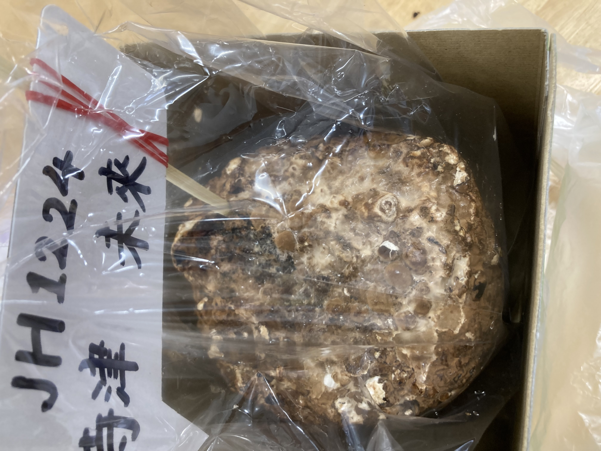
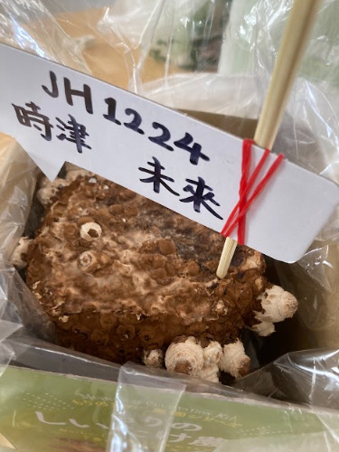
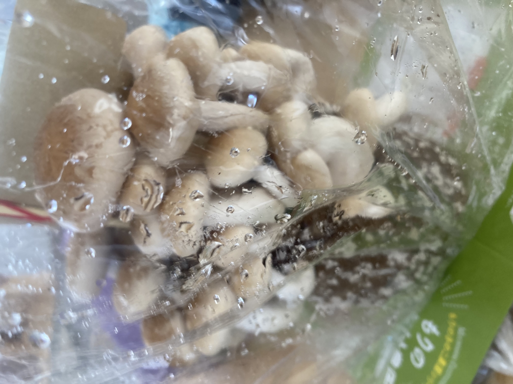
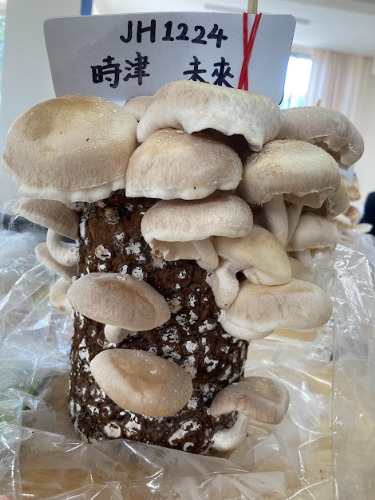
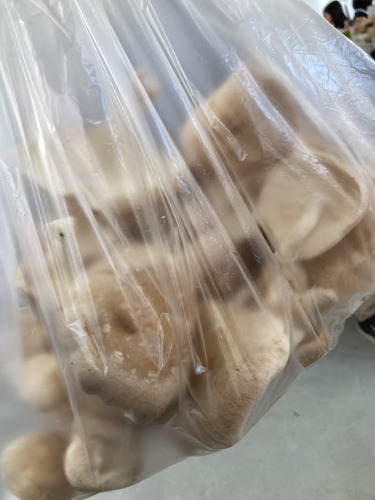
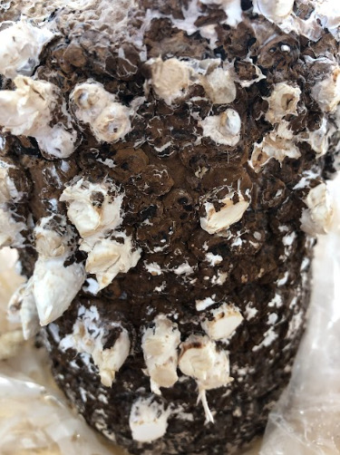
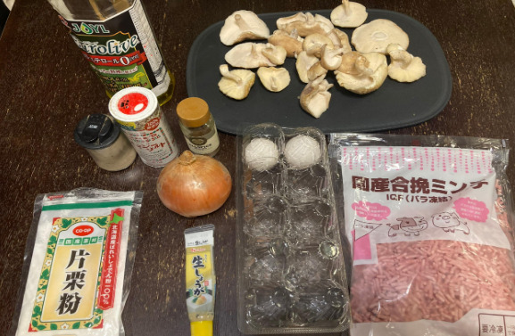
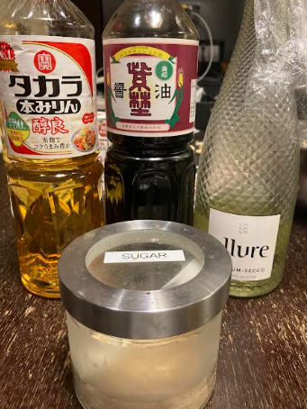
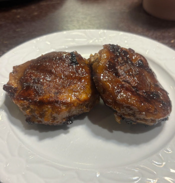

きのこの成長観察
11/6 しいたけ栽培初め（一回目水やり）

キノコの菌を起こすために、菌床に爪楊枝で穴を開け、水に濡らしました。
まだ何も生えていません。
キノコの良い匂いがします。
11/8 二回目水やり

白い突起のようなものが出てきました。
これが後々のキノコになります。
水やりをする前はとても乾燥していましたが、水をやると菌床が水分を吸収し、ジメジメしました。
キノコの繁殖には水分が必須だというので適度に与え続けました。
11/11 三回目水やり

キノコらしい形になっていました。
しかし、傘の裏の部分が完全に開いていませんでした。
それだと完全に育ちきった訳ではありません。
11/13 収穫前

11/11のキノコと比較しても、傘の部分が大きく開いています。
収穫するときは、菌床を削れないように石づきの部分を切り落とします。
11/13 収穫したキノコ

拳くらいの大きなキノコがたくさん採れました！
思っていたよりも多くてびっくりしましたが、これからたくさん料理に使おうと思います♪
11/13 収穫した後の菌床

もし菌が残っていれば、ここから２回目の栽培もできるそうです。
私も行ってみましたが難しかったです......
料理 〜椎茸の肉詰め〜
・食材の写真

【材料、調達場所】
《学校の栽培キット》
椎茸
《生協》
合挽ミンチ、卵
《スーパー》玉ねぎ
《自宅にあったもの》
胡椒、生姜チューブ、酒、片栗粉、クレイジーソルト、
オールスパイス、油、みりん、醤油、砂糖
【作り方、手順】
1️⃣玉ねぎをみじん切りにし、炒める
2️⃣いしづきを取った椎茸に片栗粉をまぶす
3️⃣玉ねぎ、合挽ミンチ、卵、生姜チューブ、クレイジーソルト、胡椒、オールスパイスを混ぜ合わせる
4️⃣椎茸に詰める
5️⃣表面を焼く
6️⃣酒を入れて蓋をし、蒸す
7️⃣みりん、醤油、酒、砂糖を混ぜたものをかける
8️⃣お皿に盛る
・完成した料理の写真

【作ってみた感想】
椎茸が主役の料理を作って食べることがあまりないので、全てが新鮮でした。種を椎茸に詰める工程が、面白かったです。工夫したところは、色々な調味料を入れたことです。
実際に食べてみると、椎茸から汁がジュワーと出てきて、オールスパイスの良い風味が広がりました。この料理を通して、椎茸を使ったものをもっと作りたいと思いました。
《参考》
区切り線